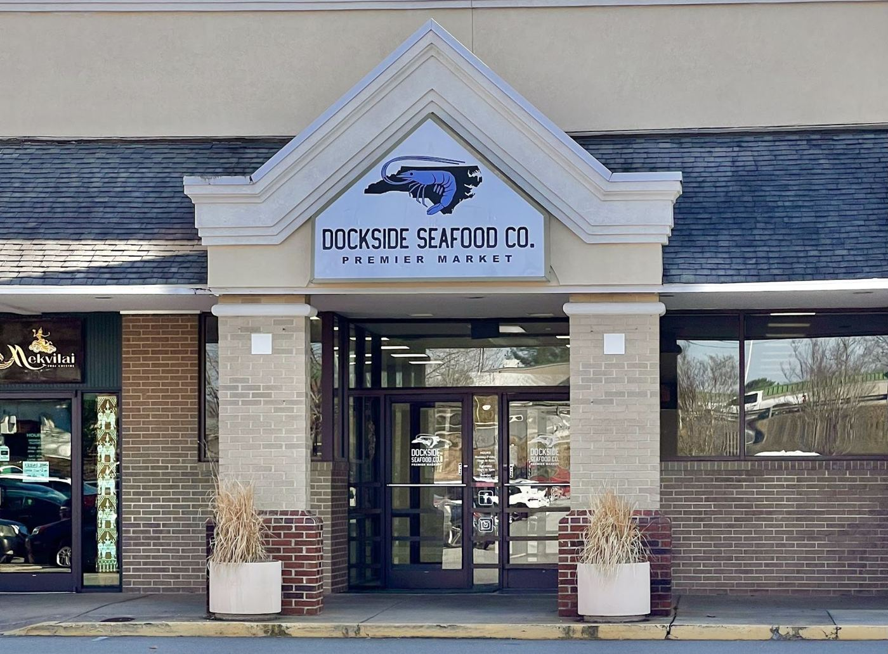
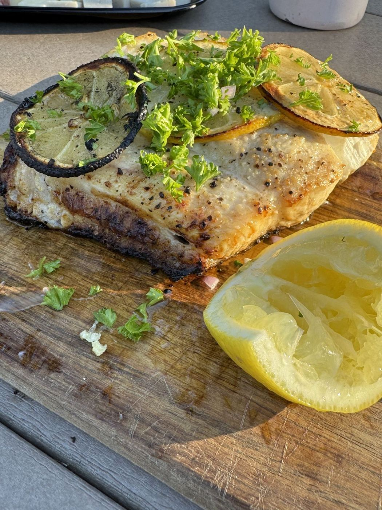
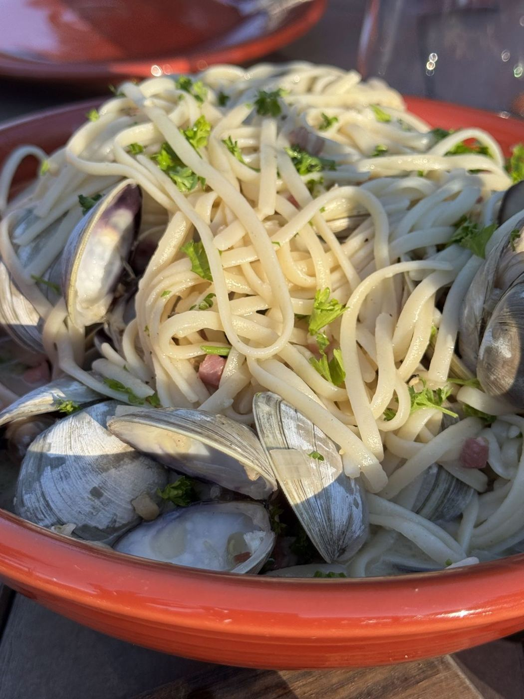
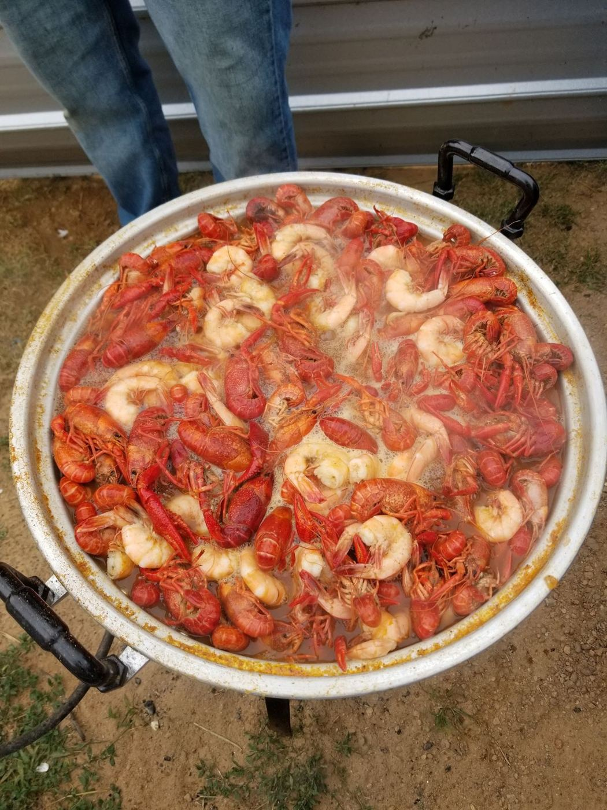

Seafood market · Hickory, NC
Fresh fish. Clean counter.
A bright, clean seafood market on N Center St with a beautiful fish selection and staff who know their stuff.
4.6★ · 258 Google reviews
At the counter
Fresh fishA beautiful selection with prices that hold up against other fresh fish markets.
Shucked oystersPints of select oysters, perfect for an oyster stew.
Fresh oysters & seafood cutsRegulars come back for oysters and cuts. One even got a free lemon on the side.
Orders ready on arrivalCall ahead and your order is ready when you get there.



Hickory says
Just found this place a couple weeks ago. Absolutely a must. The fish is clean and delicious!
My husband and I enjoyed browsing this seafood market. We got a few different things.
Great store. Very clean and bright. Beautiful fish selection and prices are competitive with other fresh fish markets. Easy to deal with and my order was ready when I got there. If you live in Hickory or surrounding area you owe it to yourself to check this place out.
Come see the case
2420 N Center St, Hickory, NC 28601